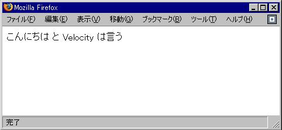

Velocity Toolを作る
通常のView Toolは無引数のコンストラクタが無くてはいけませんが、
S2Velocityを使うと有引数のコンストラクタを定義できます。
SampleTool.java
package org.seasar.velocity.tools.examples;
public class SampleTool {
private IHello fHello;
public SampleTool(IHello hello) {
fHello = hello;
}
public String getString() {
return fHello.getHello();
}
}
このSampleToolをVelocityのtoolbox.xmlへ登録します。
このView Toolは、toolbox.xmlに登録されていれば、diconファイルに登録しなくとも
自動的にコンテナ管理されます。上の有引数のコンストラクタに対して
コンストラクタ注入（Constructor Injection）が行なわれることになります。
toolbox.xml
<?xml version="1.0"?>
<toolbox>
<tool>
<key>sampleTool</key>
<scope>request</scope>
<class>org.seasar.velocity.tools.examples.SampleTool</class>
</tool>
</toolbox>
app.diconには、以下の通りにコンポーネントが登録されているとします。
app.dicon
<?xml version="1.0" encoding="UTF-8"?>
<!DOCTYPE components PUBLIC "-//SEASAR2.1//DTD S2Container//EN"
"http://www.seasar.org/dtd/components21.dtd">
<components>
<component class="org.seasar.velocity.tools.examples.HelloImpl"/>
</components>
Webアプリケーションを立ち上げて、以下のvmテンプレートへアクセスすると、
下のブラウザ画面のような結果が表示されるはずです
（HelloImpl#getHello()メソッドは、文字列"こんにちは"を返す実装であるとします）。
sample.vm
$sampleTool.string とVelocityは言う
sample.vmの表示結果
